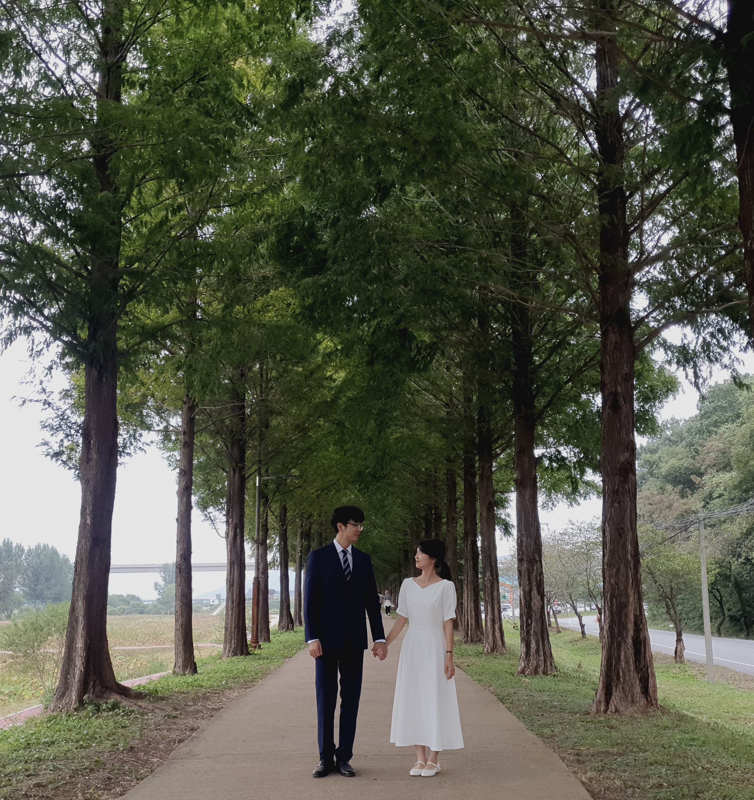

수연 ♡ 찬영
결혼식에 초대합니다
초대의 말
만물이 결실을 맺는 계절.
저희 두 사람도 사랑으로 맺어져
선물 받은 삶을 늘 함께 누리려 합니다.
감사한 분들을 저희 결혼식에 정성으로 모시니
마음 편히 참석하시어
한껏 축하해주시면 좋겠습니다.
▫
▫
▫
일시 및 장소
일시: 2022년 11월 19일 토요일 오전 11시 30분
장소: 한옥글방 (전라남도 순천시 금곡길 28)
▫
▫
▫
식순
마음 전하기
(Click)
식장 사정 상 화환은 정중히 사양합니다.
감사합니다.